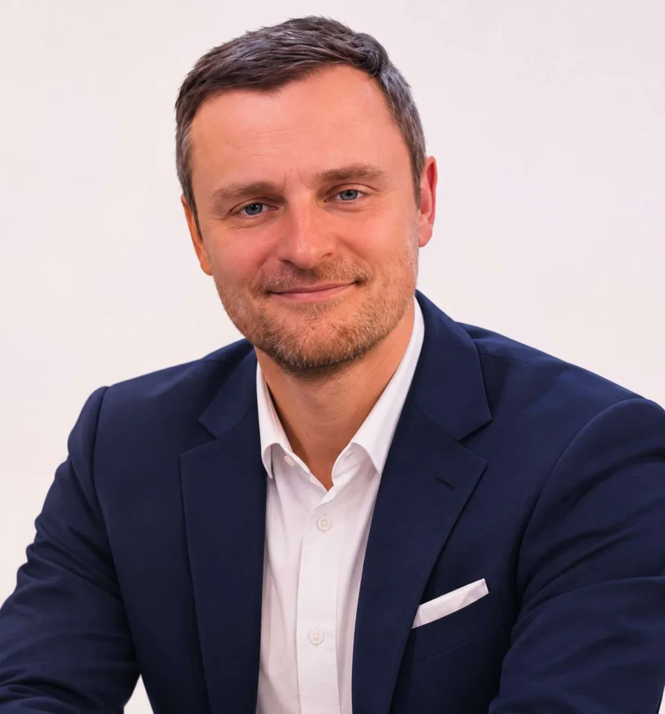
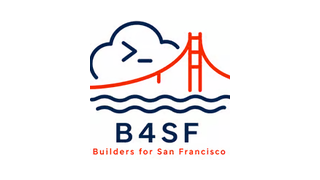
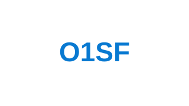
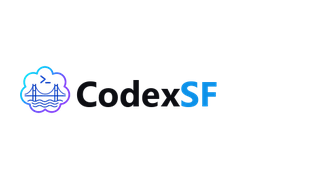
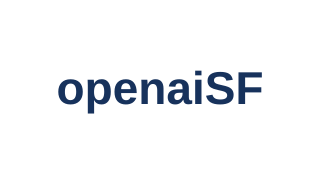
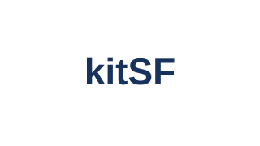
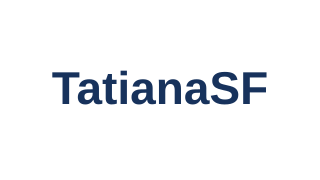

Engineer
Build · Solve · Ship
San Francisco, California
Entrepreneur · Engineer · Startup Builder
Building technology ventures, solving challenging problems, and connecting with people who create meaningful impact.

Entrepreneur and engineer building technology ventures, solving challenging problems, and connecting people, ideas, and opportunities across the U.S. and internationally.
Build · Solve · Ship
Create · Grow · Scale
Connect · Collaborate · Partner
Projects I’m building, growing, and supporting.

B4SFStartup events connecting founders, builders, investors, and operators in San Francisco.
O1SFThree-week U.S. market-entry program for international founders.
codexSFOpen-source hub for Codex workflows, HackKit, and builder events.
openaiSFDirectory of AI companies across the San Francisco Bay Area.
kitSFInvesting in individual talent and supporting professional growth.
TatianaSFEntrepreneurship, mentorship, and connections across business communities.A builder’s mindset across technology and people.
Turning complex problems into practical technology and products.
Building ventures around real needs, thoughtful execution, and long-term growth.
Connecting founders, builders, and people working across cultures and disciplines.
I’m always interested in connecting with people working on interesting technology, products, and businesses.